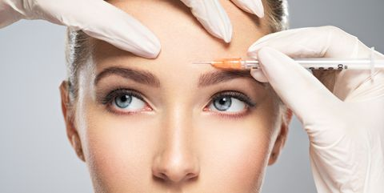

Cosmetic Treatments
Botox
Botox is an injection that temporarily relaxes facial muscles reducing the appearance of fine lines and wrinkles as well as preventing new lines from forming. Common injection sites are the glabella (region between eyebrows), forehead and outer corners of eyes(crows feet).Treatment is fast and painless and lasts from 4 to 6 months.
Fillers
Lip enhancement provides a fast and effective way to improve the appearance of lips. Whether you want to restore youthful plumpness, or add volume, we will tailor the delicate proportions of filler required to give you your desired result. Filler can be used in a number of ways, correcting asymmetry, increasing fullness and definition and helping to hide the tell tale creases brought about by sun or smoking.